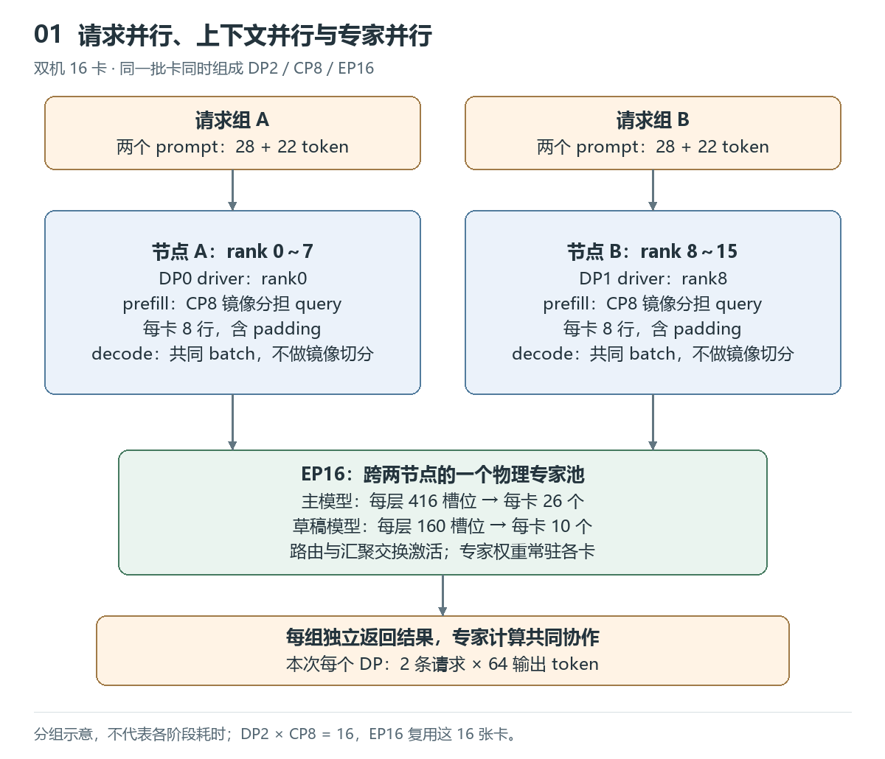
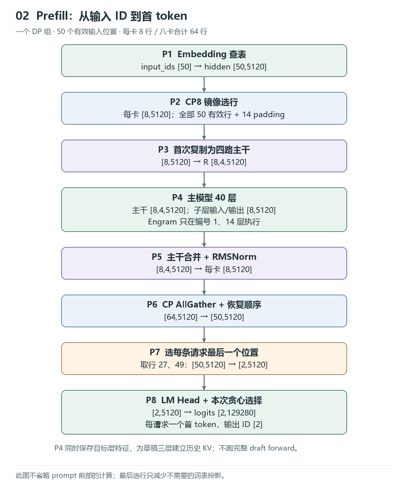
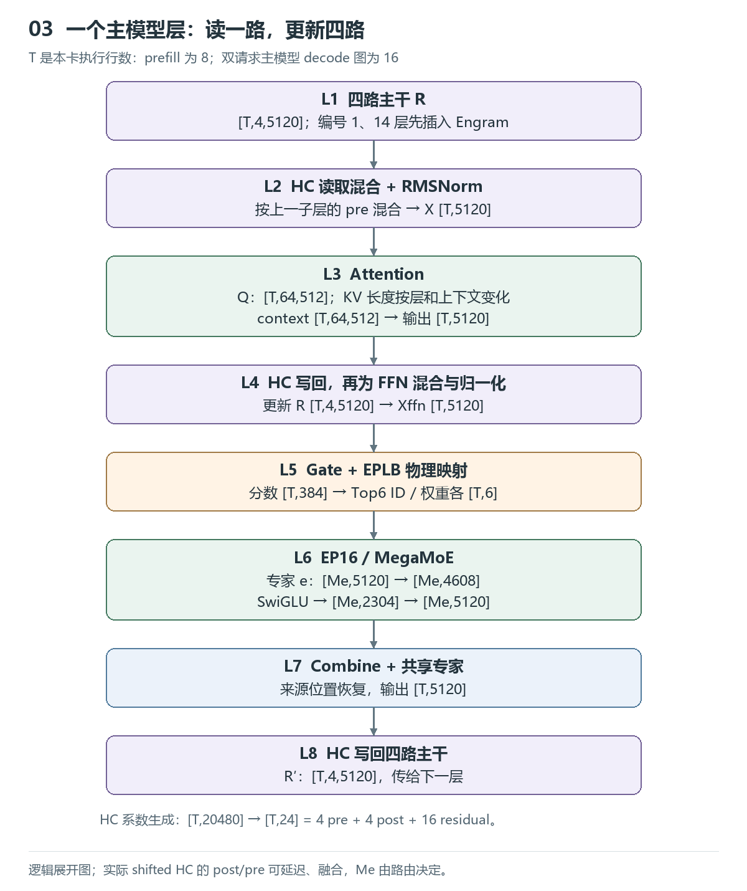
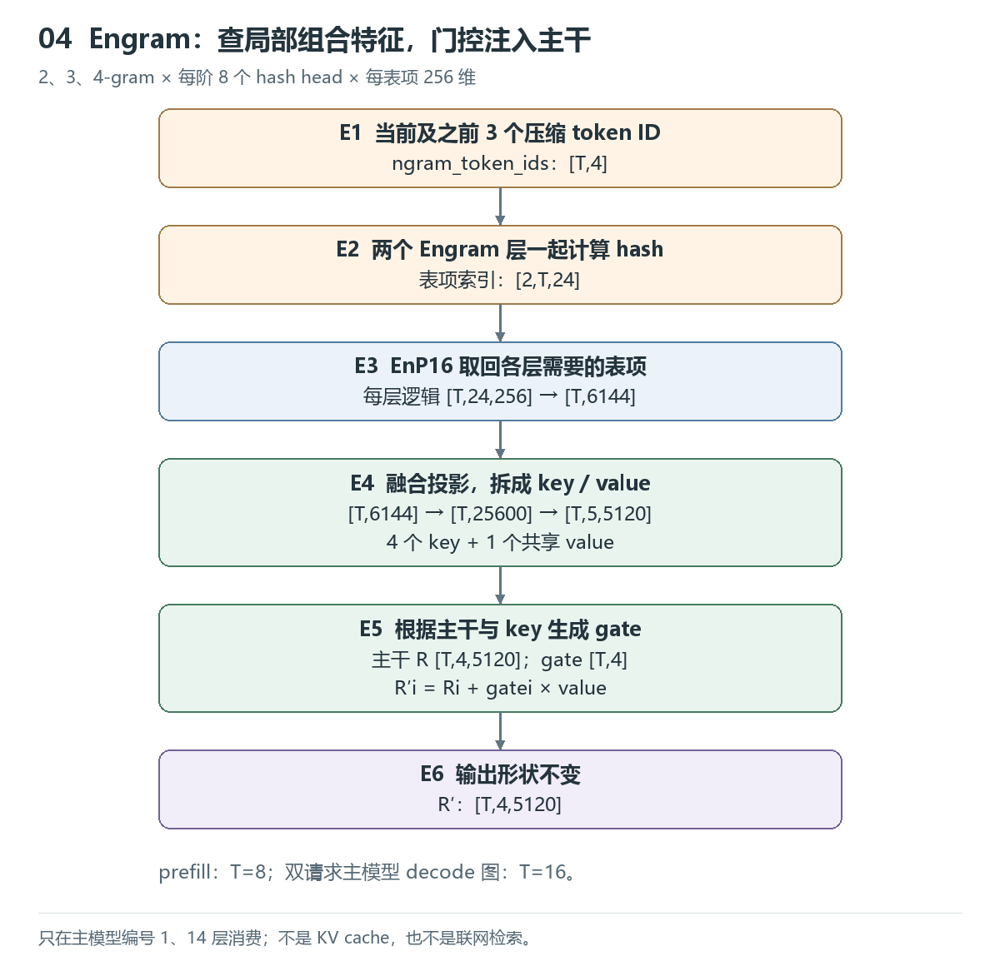
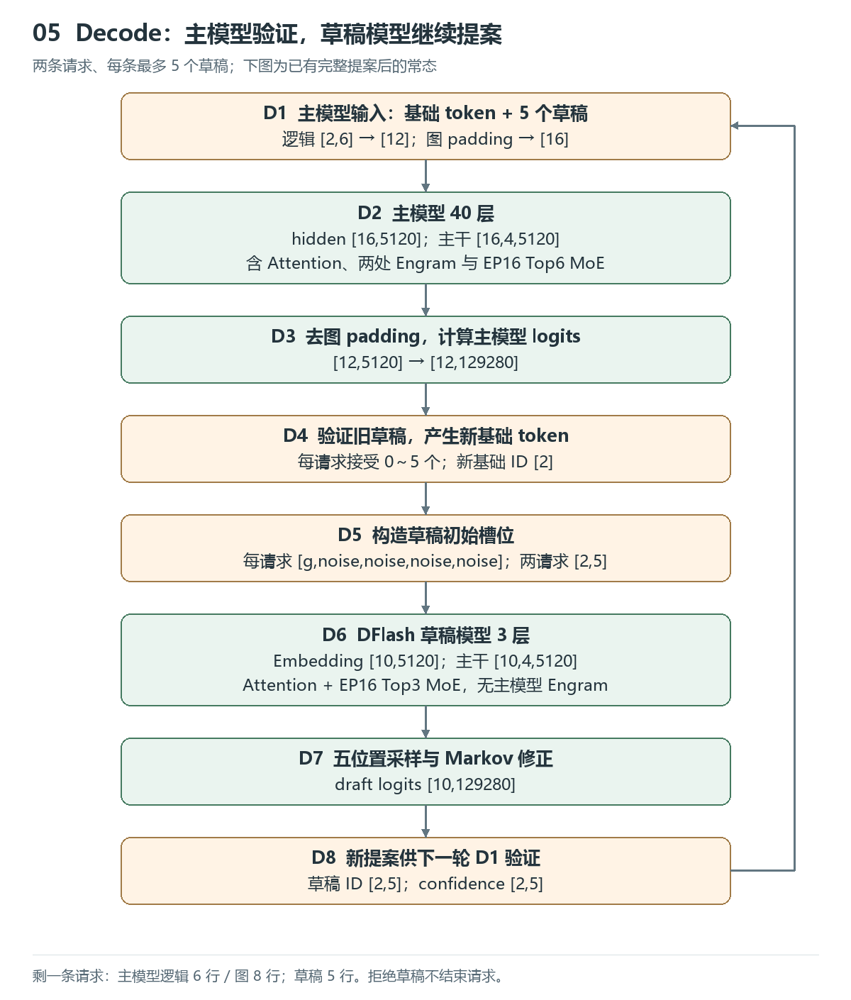

沿着 Shape 看懂 DeepInfer：Prefill、CP8 与投机 Decode
本文从一次双机 16 卡推理出发，沿输入、主模型、Engram 和草稿模型追踪张量变化。重点是解释“哪个维度为什么改变”，而不是逐个阅读底层 kernel。
模型为 DeepSeek-V4.1-Flash-1017，主模型 40 层，DFlash 草稿模型 3 层。主仓库固定到 553741557a57df44a46fb3ab72b6aafeaf945337，采集日期为 2026-10-27，本文整理于 2026-10-28。
证据口径： 请求长度、输出 token 数和事件次数来自实际采集；本文的中间 shape 由该版本源码、模型配置与图大小对应关系推导，未逐张量导出。所有图均为逻辑流程图，不按实测时长或内存地址绘制。本次完成了生成与 trace 检查，未做完整模型精度评测或无 profiler 的性能对比。
1. 先统一请求、位置与卡的概念
硬件为两台机器、每台 8 张 Ascend950DT。DP0 使用 rank0～7，DP1 使用 rank8～15；各组 CP8，全部 16 卡共同组成 EP16。它们复用同一批卡，不是 DP × CP × EP 张卡。
本次采用自然路由、开启 EPLB，固定 NextN=5、关闭 MTP 变长验证；单个 DP 的请求容量为 4，上下文上限 32768，prefill batch 上限 4096。它们是本例的运行设置，不代表最少卡数或最优并行配置。

DP（数据并行）分配不同请求组；CP（上下文并行）在 prefill 中分配每条请求的 query 位置；EP（专家并行）分配物理专家及其任务。两组 DP 共享专家池，不是两份独立完整模型。
本次每个 DP 都提交了以下两条 prompt，先分别预热，再采集完整生成：
| 请求 | 输入文本 | 输入 token | 输出 token |
|---|---|---|---|
| A | 请逐步解释大型语言模型推理中 prefill 和 decode 阶段分别计算什么，KV cache 如何参与。答案： | 28 | 64 |
| B | 请用具体例子解释混合专家模型的路由、专家并行、dispatch 和 combine。答案： | 22 | 64 |
每个 DP 有 50 个输入 token、128 个输出 token；两个 DP 共执行 4 次请求，输出 256 token。相同 prompt 在两个 DP 上生成的 token ID 一致。max_tokens=64, ignore_eos=True 用于固定采集长度，生成结束符也不会提前停止；这不代表回答质量已经验证。
| 符号 | 本次取值 | 含义 |
|---|---|---|
| H | 5120 | 单路 hidden 的特征维度 |
| m | 4 | 超连接主干路数 |
| V | 129280 | 词表大小 |
| I | 2304 | 专家 SwiGLU 后的中间维度 |
| D | 5 | 每轮草稿 token 数，不是草稿层数 |
| T | 随阶段变化 | 本卡计算的张量行数，可能包含 padding |
| M_e | 由路由决定 | 某个物理专家收到的行数 |
launch_forward_N2_B12 中，N 对应源码 num_reqs，B 对应 total_q。它表示 2 条请求、12 个逻辑 query 位置，不是 12 条请求，也不是已经输出了 12 个 token。实际图执行行数还可能更大。
2. Prefill：50 个输入位置怎样变成每卡 8 行
先看一个 DP 组。Embedding 为每个 token ID 查询一个 H 维向量：
input_ids [50] → embedding [50,5120]
2.1 CP8 按每条请求分别镜像分块
对长度为 L 的序列，先分成 2C=16 块，每块长度为：
CP rank r 负责块 r 和块 15-r。这样把靠前、靠后的 query 配在一起，缓解因果 Attention 的负载差异。实际模型还有滑动窗口与稀疏选择，不能据此认为各卡工作量严格相等。
本次 p(28)=p(22)=2，每卡从每条请求拿 4 个位置，合计 8 行。下面的位置编号在每条请求内从 0 开始，— 为 padding。
| CP rank | 请求 A 的 4 个位置 | 请求 B 的 4 个位置 | 有效行 / 分配行 |
|---|---|---|---|
| 0 | 0, 1, —, — | 0, 1, —, — | 4 / 8 |
| 1 | 2, 3, —, — | 2, 3, —, — | 4 / 8 |
| 2 | 4, 5, 26, 27 | 4, 5, —, — | 6 / 8 |
| 3 | 6, 7, 24, 25 | 6, 7, —, — | 6 / 8 |
| 4 | 8, 9, 22, 23 | 8, 9, —, — | 6 / 8 |
| 5 | 10, 11, 20, 21 | 10, 11, 20, 21 | 8 / 8 |
| 6 | 12, 13, 18, 19 | 12, 13, 18, 19 | 8 / 8 |
| 7 | 14, 15, 16, 17 | 14, 15, 16, 17 | 8 / 8 |
八卡合计 64 行，其中 50 行有效、14 行 padding。CP 拆的是负责计算的 query，不是切成八段互不联系的文本；各卡仍需要组内交换所需 KV 等数据。
2.2 从 Embedding 到第一个输出 token

| 步骤 | 输入 → 输出 | 为什么变化 |
|---|---|---|
| Embedding | [50] → [50,H] |
查 token 向量表 |
| CP 镜像选行 | [50,H] → 每卡[8,H] |
分配 query，保留 padding |
| 首次扩展主干 | [8,H] → [8,4,H] |
每个向量复制四份，不是升维 GEMM |
| 主模型 40 层 | 四路主干保持 [8,4,H] |
子层读一路、计算一次，再更新四路 |
| 最终主干合并、RMSNorm | [8,4,H] → [8,H] |
动态加权合并四路 |
| CP 汇聚、恢复顺序 | [64,H] → [50,H] |
去 padding，恢复原序列顺序 |
| 每条请求选最后一行 | [50,H] → [2,H] |
选扁平行号 27、49，预测 prompt 后的 token |
| LM Head | [2,H] → [2,V] |
logits = hidden × W_headᵀ |
| 本次贪心选择 | [2,V] → [2] |
温度为 0，每请求输出一个首 token |
“选最后一行”只省去不需要的词表投影，不是只计算最后一个 prompt token。前面的输入位置已经参与 prefill，并建立 KV cache。投机 decode 需要多个位置的分布，不能照搬“每请求只选最后一行”。
3. 一层主模型：四路主干、Attention 与 MegaMoE
这一节用 T 表示本卡行数：本次 prefill 为 8；双请求稳定 decode 的主模型图为 16；单请求图为 8。表中的矩阵使用数学上的输入维×输出维写法，源码权重常按其转置存放。量化和分块布局不改变这里的逻辑特征维度。

3.1 四路主干怎样读写
初始化是 R[t,i,d]=X[t,d]，所以四路最初相同。后续不同的写入、混合系数让它们积累不同的历史组合。Attention 与 MoE 各执行一次，不是四次。
四路展平为 [T,20480]，经过归一化与训练得到的投影，产生 [T,24] 分数：
24 个数分为 4 个 pre、4 个 post、16 个 residual 分数。scale/base 调整后，pre 经 sigmoid 加 epsilon，post 经 sigmoid 和输出缩放；residual 经 Sinkhorn 归一化形成 4×4 矩阵 C。pre 不要求四项之和为 1。
本次是 shifted HC，读取与系数生成错开一个子层：
当前 R 生成的 pre 留给下一子层，b、C 控制本次写回。这里把 C 的索引定义为“输出路 i 读取输入路 j”；kernel 的存储方向需按源码对照。实际 post 可能延迟到相邻子层并融合执行。
例如四路最初都是 [1,0]，本次结果为 [0,1]，若 C=I、b=[1,0.5,0.2,0.1]，更新后四路为 [1,1]、[1,0.5]、[1,0.2]、[1,0.1]。它们保留了不同更新强度的版本；下一子层再选择读取组合。C 则允许旧信息在各路间直接交换，不必先经过新的 Attention/MoE。
3.2 Attention 的主要 shape
本模型有 64 个 query head，每 head 512 维；共享 KV 向量是 512 维，其中包含 64 维 RoPE 部分。不是每个 head 分别保存一份完整 KV。
| 计算 | 输入 → 输出逻辑 shape | 说明 |
|---|---|---|
| Q 降维 | [T,5120] → [T,1280] |
Q_a = X W_qa |
| Q 展开 | [T,1280] → [T,64,512] |
归一化、投影、reshape，并做对应 RoPE/量化 |
| SWA KV 投影 | [T,5120] → [T,1,512] |
生成局部窗口 KV |
| Prefill CP 交换 | 局部 KV → 本组 KV | 本次汇聚后有效 SWA KV 为 [50,1,512] |
| 压缩 KV 源层 | C2 初始输入得到 [25,1,512]；C1 为 [50,1,512] |
分别对应 2:1 与 1:1 位置压缩 |
| 索引 Q，适用的源层 | [T,1280] → [T,32,128] |
给历史位置评分；不是 MoE gate |
| 索引 K | 共享 KV → [Nkv,128] |
存入或读取索引缓存 |
| 选历史位置 | 分数 → [T,512] 索引 |
不足项为无效索引；部分层还使用 [T,2048] 候选块，块大小 8 |
| 主 Attention | Q 与允许访问的 KV → [T,64,512] |
按窗口、索引、因果 mask、sink 计算 |
| 分组输出投影 | [T,8,4096] → [T,8,1024] |
将 64 个 head 分为 8 组投影 |
| 最终输出投影 | [T,8192] → [T,5120] |
回到单路 hidden |
Nkv 随序列长度、历史上下文和压缩比例改变。层编号 0、1 为非压缩 SWA；2～19 使用 C2，20～39 使用 C1。主 KV 源层为 2、8、14、20，后续共享消费者复用相应 KV；索引源也有独立分组，不能把每层都画成重新生成全部 KV 和索引。
核心计算可写为：
集合 S_t 由窗口、稀疏选择与 mask 决定，alpha 按模型的 sink 等规则归一化。该公式解释计算含义，不表示实现分配了一个完整稠密 score 矩阵。
3.3 Gate 与专家计算
主模型 gate 的流程是：
校正 bias 用于排名，最终权重用未加 bias 的选中分数归一化。随后 EPLB 将 384 个逻辑专家映射到 416 个物理槽位，每卡每层 26 个。共享专家单独参与，不占 Top6 名额。
| 步骤 | 输入 → 输出 |
|---|---|
| Gate 投影 | [T,5120] × [5120,384] → [T,384] |
| Top6 与物理映射 | 专家 ID [T,6]、权重 [T,6] |
| EP16 分发到专家 e | [M_e,5120] |
| Gate/up 合并 GEMM | [M_e,5120] → [M_e,4608] |
| 拆成两路、带模型 clamp 的 SwiGLU | 两个 [M_e,2304] → [M_e,2304] |
| Down GEMM | [M_e,2304] → [M_e,5120] |
| Combine 与共享专家 | 恢复来源行序并加权为 [T,5120] |
M_e 取决于全部 EP rank 的有效路由和 padding 处理，不能用平均值代替。本次未采集逐专家接收直方图。MegaMoE 将分发、两次 GEMM、激活与汇聚融合，trace 中不会自然出现五个独立阶段。
HBM 中路由专家是按 MegaMoE 分块重排的 packed FP4；取块后在 UB 展开为 FP8 NZ，再送往 L1/L0/Cube。共享专家 FP8 权重另有预排 NZ 路径。因此“FP4/FP8”与“ND/NZ”应分别讨论，不能把全模型笼统称为 ND。
4. Engram：按局部 token 组合查表，再门控注入主干
Engram 只出现在主模型编号 1、14，即第 2、15 层。prefill 与 decode 都会执行这两处模块；草稿三层不含它们。

它对每个位置准备当前及之前三个压缩 token ID [T,4]。2、3、4-gram 各有 8 个 hash head，所以每 token 每 Engram 层取 3×8=24 个表项；每项 256 维。这里的 EnP16 指 Engram 表并行：大表按 16 个 rank 分片，查询可以取回其他卡上的表项。
| 步骤 | Shape |
|---|---|
| n-gram token 窗口 | [T,4] |
| 两个 Engram 层一起计算 hash | [2,T,24] |
| 每层在 EnP16 中取回表项 | 逻辑 [T,24,256] |
| 拼接作为投影输入 | 每层 [T,6144]，量化实现另携带 scale |
| 融合投影 | [T,6144] → [T,25600] → [T,5,5120] |
| 拆分 | 4 路 key [T,4,5120]；共享 value [T,5120] |
| 门控融合 | 主干 [T,4,5120] → [T,4,5120] |
对每个 token 的第 i 路：
signed-sqrt 带数值 clamp。它引入的是训练得到的局部组合特征，不是请求增长的 KV cache，也不是联网检索。查询只取所需表项，不搬整张表。两个层的 fetch 可提前一起发起，执行到相应层再消费结果。
代入本次行数：prefill 每卡的窗口、投影结果分别为 [8,4]、[8,5,5120]；双请求主模型 decode 图为 [16,4]、[16,5,5120]。这些形状包含对应 padding。
5. Decode：主模型验证 6 个位置，草稿模型产生 5 个候选
5.1 为什么主模型 12 行，草稿模型 10 行
两条请求都已有完整提案时，每条主模型输入为 [g,d1,d2,d3,d4,d5]，g 是当前基础 token，d 是待验证草稿：逻辑上 2×6=12 行。
主模型预捕获图大小为 1,2,4,8,16,24，选择能容纳输入的最小图：B12 选 16 行图；剩一条请求的 B6 选 8 行图。图 padding 与 prefill 的 CP padding 是两件事。

| 阶段 | 两条请求 | 一条请求 |
|---|---|---|
| 主模型逻辑输入 | [2,6] → [12] |
[1,6] → [6] |
| 主模型图输入 | [16] |
[8] |
| Embedding / 四路主干 | [16,H] / [16,4,H] |
[8,H] / [8,4,H] |
| 主模型 40 层后单路输出 | [16,H] |
[8,H] |
| 采样选行、去图 padding | [12,H] |
[6,H] |
| LM Head 的完整词表 logits | [12,V] |
[6,V] |
| 主模型验证后的新基础 token | [2] |
[1] |
| 草稿初始槽位 | [2,5] |
[1,5] |
| 草稿 Embedding | [10,H] |
[5,H] |
| 草稿 3 层后的 hidden | [10,H] |
[5,H] |
| 草稿完整词表 logits | [10,V] |
[5,V] |
| 新草稿 ID、confidence | 各 [2,5] |
各 [1,5] |
刚从 prefill 转入时，提案槽位尚需初始化，不能假设第一轮已含五个有效草稿。表格描述有完整提案后的常态形状；有效采样行、接受长度仍按元数据处理。
主模型每轮还在编号 37、38、39 处取主干特征：各对 4 路求均值得到 [T,H]，拼成 [T,15360]，投影到 [T,H]，再产生 [T,3,512]，写入三个草稿层的历史 KV。prefill 时 CP 汇聚、恢复顺序后写入本组历史位置。这一步包含在主模型 forward 内，不是再跑一次完整的草稿三层。
5.2 草稿输入为什么是“基础 token＋noise”
每条请求先构造 [g,noise,noise,noise,noise]，noise 是配置的专用 token，而非每轮随机数。两条请求展开为 10 个 ID，查表得到 [10,H]，一次通过三层草稿模型。草稿 Attention 读取主模型特征形成的历史缓存和当前草稿位置。
草稿模型每层有 128 个逻辑专家、Top3；EPLB 后 160 个物理槽位、每卡每层 10 个。Gate 为 [T_d,128] → [T_d,3]，其中双请求 T_d=10。专家内部仍为 H → 2I → I → H，单路计算、四路主干更新。
随后五个位置做采样，并包含本模型的低秩 Markov 修正：
双请求每个采样位置的修正为 [2] → [2,256] → [2,V]；confidence head 结合 hidden 与 Markov 特征，生成各位置的接受率预测。最终每请求产生五个候选。不是把三层草稿模型完整运行五遍。 本次还使用采样 TopK=4096，草稿保存的 logprobs 与词表索引各为 [2,5,4096]。
主模型下一轮把 g 与这五个候选一起验证。草稿被拒绝不表示回答不相关，也不会因此结束请求：主模型给出替代 token，之后继续提案。confidence 是提案相关预测，不是事实正确率或语义相关性判定。
5.3 CP8 在 decode 中没有进行什么
该版本的镜像选行只在 prefill 执行。decode 将共同 batch 元数据广播给 CP 组，Q 投影用复制权重，Attention 路径没有按 CP rank 切 head 或历史 KV；由源码可判断，同组存在复制的 Attention 工作。它不是把 B12 除以 8 分给每卡。
但本次仅采集 rank0、rank8，二者属于不同 CP 组。单卡 trace 可见完整 64-head Attention，没有同组八 rank 的时间线和输入/KV 比对，不能把“八卡同时重复”写成已完成的直接实测，也不能换算成八倍可得加速。
作为对照，Attention DP 可以让各 rank 处理不同请求；TP 切分 head/投影；DCP 可以保持相同 query，但读取不同的历史 KV 分片，再按 softmax 统计量合并。相同 query 本身不足以证明冗余。框架、模型与硬件支持需要另行验证，不能把其他框架参数直接套到这里。
6. 把 shape 与这次 trace 对上
下面次数均针对一个 driver trace，另一个 DP 结果相同：
| 上层事件 | 次数 | 含义 |
|---|---|---|
launch_forward_N2_B50 |
1 | 两请求 prefill，CP 后每卡 8 行 |
launch_forward_N2_B12 |
22 | 双请求 decode，主模型 16 行图 |
launch_forward_N1_B6 |
11 | 单请求 decode，主模型 8 行图 |
launch_forward_N1_B1 |
37 | 本次的占位 forward，使用 1 行图 |
也就是一次真实 prefill、33 轮真实 decode，另有 37 次占位。占位会产生真实设备任务，不是空事件；没有用户输出，不计为真实请求生成。B1 本身只表示一个输入位置，不能在其他用例中仅凭名字认定占位。
主模型 MegaMoE 事件数为 40×(1+22+11+37)=2840；草稿为 3×(22+11+37)=210。它们包括占位执行，不能当成有效请求的 decode 次数。
在 MindStudio Insight 中，先找上述主模型 forward，再看 verification、DFlash 与 NPU 轨道。CPU 的 launch 表示提交，不等于设备完成；ZOS decode 常在提交本轮 forward 后，处理上一轮采样结果。两个节点的时间线未经时钟校验也不宜直接拼接。
这次只有短文本小 batch。CP 的长上下文收益、真实逐专家 M_e 分布和更优并行配置，均不能从本例直接得出。
源码与延伸阅读
源码链接固定到本次版本；不发布机器地址、访问资料和原始采集文件。